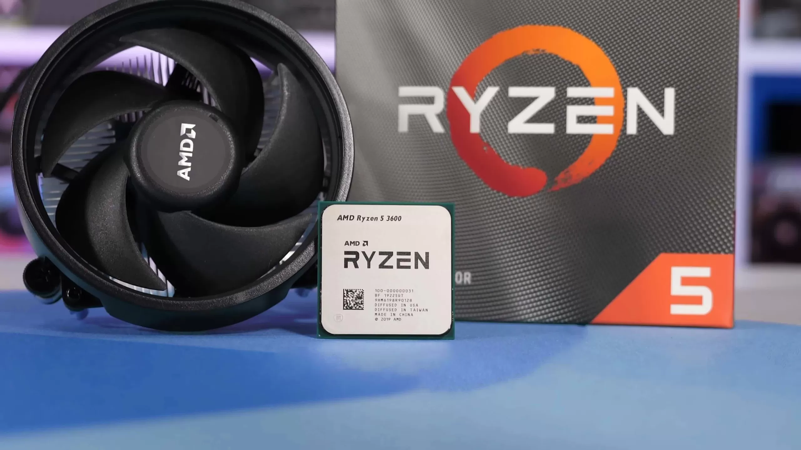
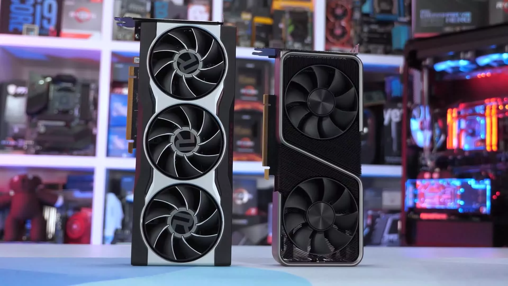

Amd Computers
Recently we took a look at how well the Ryzen 5 3600 performed in games when paired with the GeForce RTX 3080 and we did this upon readers and viewers' request. That ended up being a very popular test and since the release of the Radeon RX 6800 series we’ve seen just as many requests for a repeat but this time using the Radeon GPU.
Since our first test, there have also been new relevant game releases and we suspect once you can actually buy it, the RX 6800 will be a popular graphics card choice. With so many of you using the still amazing Ryzen 5 3600, it makes sense to see how it performs with the new RDNA2 GPU -- though right now we feel the Intel Core i5-10400F is a better value buy, so perhaps a comparison with that part in the coming weeks might be a good idea.
For this article we’re going to look at performance in 21 games at 1080p, 1440p and 4K with the R5 3600 in a stock configuration using 32GB of DDR4-3200 CL14 memory. We’ve not bothered to overclock the Ryzen processor this time and have instead opted to add more games.
Also please note the Ryzen 9 3950X and Core i9-10900K have been included purely as reference points and have not been overclocked either. This isn’t a CPU vs. CPU content piece, rather we’re just seeing how close the Ryzen 5 3600 can get to delivering $500+ CPU performance in games.